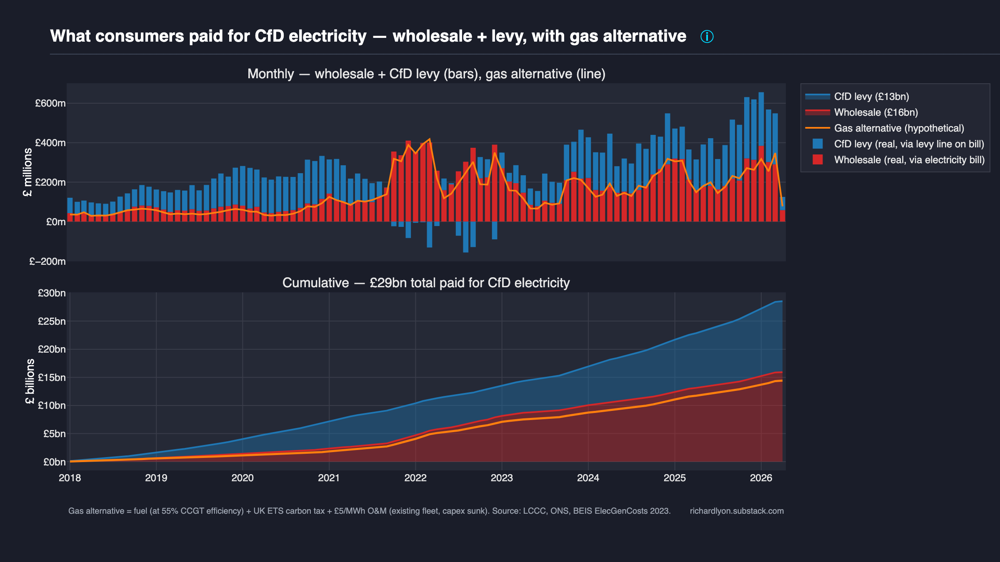

CfD electricity cost vs gas alternative¶
What consumers paid for CfD-subsidised electricity, decomposed into real cash flows, with the gas fleet alternative as a reference line.
Every MWh generated under a Contract for Difference is paid for by consumers through two channels: the wholesale market price on the electricity bill, plus a top-up via the CfD levy. This chart shows both — and compares the total to what the same MWh would have cost from the gas fleet the UK already had.

Headline numbers¶
Cumulative, January 2018 – April 2026 (the period where both LCCC CfD data and the gas counterfactual are available; early 2016–17 generation of ~5.6 TWh is excluded for like-for-like comparison):
| Cumulative | What it is | |
|---|---|---|
| Wholesale (red) | £15.9bn | Market reference price × CfD generation. Paid by consumers via the per-kWh price on their electricity bill. |
| CfD levy (blue) | £12.6bn | CFD_Payments_GBP from LCCC. Paid by consumers via the Supplier Obligation levy line. Goes negative in 2022 when wholesale > strike. |
| Total CfD cost | £28.5bn | Wholesale + levy = strike price × generation. The full cost of CfD electricity to consumers over this window. |
| Gas alternative (orange line) | £14.3bn | What the same MWh would have cost from the existing UK gas fleet: fuel + carbon + £5/MWh O&M. |
| Premium | £14.2bn | Total CfD cost − gas alternative. The policy cost of choosing CfDs over the existing gas fleet. |
Including the early 2016–17 period (which has no gas comparator), the full LCCC cumulative CfD cost to date is £29.2bn — the headline figure commonly cited. The £0.7bn difference is real CfD spending but cannot be set against a like-for-like gas counterfactual.
How to read the chart¶
Axes¶
- X-axis: monthly (top panel) / cumulative monthly (bottom panel)
- Y-axis: £ millions (top) / £ billions (bottom)
Real money vs hypothetical¶
The design deliberately separates what happened from what would have happened:
- Stacked bars / areas are real cash flows. Wholesale (red) and CfD levy (blue) are both real money, sitting on different lines of the consumer electricity bill. Their sum is the total CfD electricity cost.
- The orange line is hypothetical. It's what the same electricity would have cost from gas. It isn't real money that changed hands.
Bar top vs line¶
- Bar top above the orange line → CfD cost more than the gas alternative that month.
- Bar top below the orange line → CfD cost less than the gas alternative.
What the chart reveals¶
CfDs are a permanent crisis¶
Gas disruptions — Russia/Ukraine, Nord Stream, Middle East tensions — are often cited to argue that renewables shield consumers from volatile fossil fuel markets. The data shows the opposite. Gas shocks are intermittent; CfD strike prices are a permanent crisis-level floor.
Annual £/MWh paid for CfD electricity vs the gas alternative:
| Year | CfD total (£/MWh) | Gas alternative (£/MWh) | CfD premium |
|---|---|---|---|
| 2018 | 134 | 48 | +£86 (2.8×) |
| 2019 | 139 | 34 | +£105 (4.1×) |
| 2020 | 142 | 29 | +£114 (5.0×) |
| 2021 | 145 | 93 | +£52 (1.6×) |
| 2022 (gas crisis) | 155 | 146 | +£10 (1.07×) |
| 2023 | 163 | 84 | +£79 (1.9×) |
| 2024 | 149 | 70 | +£79 (2.1×) |
| 2025 | 151 | 74 | +£77 (2.0×) |
Two stories in one table:
- The gas alternative is volatile but mean-reverts. £29/MWh in 2020, £146/MWh at the 2022 peak, back to £74/MWh in 2025. A +6.4%/yr CAGR dragged upward by the Ukraine shock; without 2022 the trend is flat.
- CfD prices are stable but permanently high. £134/MWh in 2018 to £151/MWh in 2025, a +1.7%/yr CAGR. The strike price mechanism is working as designed — consumers are insulated from volatility. What they are insulated at is crisis-era gas prices, forever.
The one year the two lines nearly converge is 2022 — the worst energy crisis in living memory. In every other year since 2018, CfD electricity cost consumers roughly 2× what the existing gas fleet would have cost. The scheme doesn't just underperform in normal years — it locks in the worst year's price as the baseline for the next 15.
The levy is only part of the cost¶
Reporting on "CfD subsidies" usually quotes the levy number alone — £13bn cumulatively, the blue slice. That is the top-up consumers pay specifically because generation is under CfD. But it isn't the full cost of CfD electricity. Consumers also pay the wholesale portion (red, £16bn) on their regular bill. Add them together and the true cost of CfD electricity is £29bn.
2022 — the levy went negative¶
During the gas crisis, wholesale prices blew past most CfD strike prices. Under a CfD, when wholesale > strike, generators pay back the difference. The blue bars go negative for most of 2022: consumers received refunds via the levy line. This is the mechanic working as designed — CfD fixes the price both ways. Note that the gas alternative line spikes proportionally in the same months: if we'd been on gas, those MWh would have cost more, not less.
The premium compounds outside the crisis¶
In most months outside 2021–23, the orange line sits below the bar top — the gas alternative would have been cheaper for that specific MWh. Cumulatively, the CfD system cost £14.9bn more than the existing gas fleet would have over the same period. That is the real cost of the policy choice, separated from wholesale prices that every consumer pays regardless of generation technology.
Methodology¶
CfD cost (red + blue stacks)¶
Both slices come directly from the LCCC Actual CfD Generation and avoided GHG emissions dataset, aggregated to monthly totals:
- Wholesale =
Market_Reference_Price_GBP_Per_MWh × CFD_Generation_MWh, summed per month. - CfD levy =
CFD_Payments_GBP, summed per month. This is the reference value published by LCCC for subsidy/levy totals. - Total CfD cost = wholesale + levy =
strike × generation(by construction).
No modelling. These are all real money flows reported by the scheme administrator.
Gas alternative (orange line)¶
Full methodology in Gas counterfactual. In summary: for each day, we compute an implied £/MWh for gas-generated electricity as
then multiply by the actual daily CfD generation to get a daily £ figure, and resample to monthly. The O&M figure assumes the existing UK CCGT fleet (capex sunk, built 1995–2012) — this is the relevant comparison because the policy choice was "pay for CfDs or keep running the gas fleet we already had," not "build renewables or build new gas plants."
Sensitivity: using new-build gas assumptions (£20/MWh all-in) raises the gas alternative to £17.2bn (premium drops to £12.0bn). Stripping carbon tax entirely drops it to £11.9bn (premium £17.3bn). The direction and order of magnitude are robust to these choices.
Data & code¶
- CfD data — LCCC Contracts for Difference data portal
- Gas price — ONS System Average Price of gas
- Carbon price — UK ETS auction results (GOV.UK)
- Chart source —
src/uk_subsidy_tracker/plotting/subsidy/cfd_vs_gas_cost.py - Counterfactual model —
src/uk_subsidy_tracker/counterfactual.py
To reproduce: